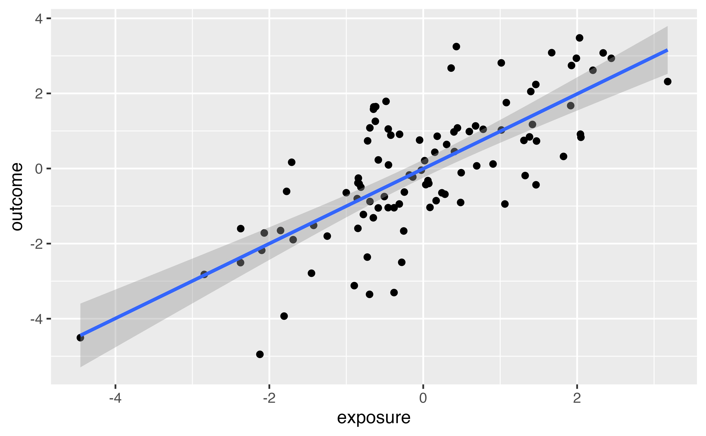
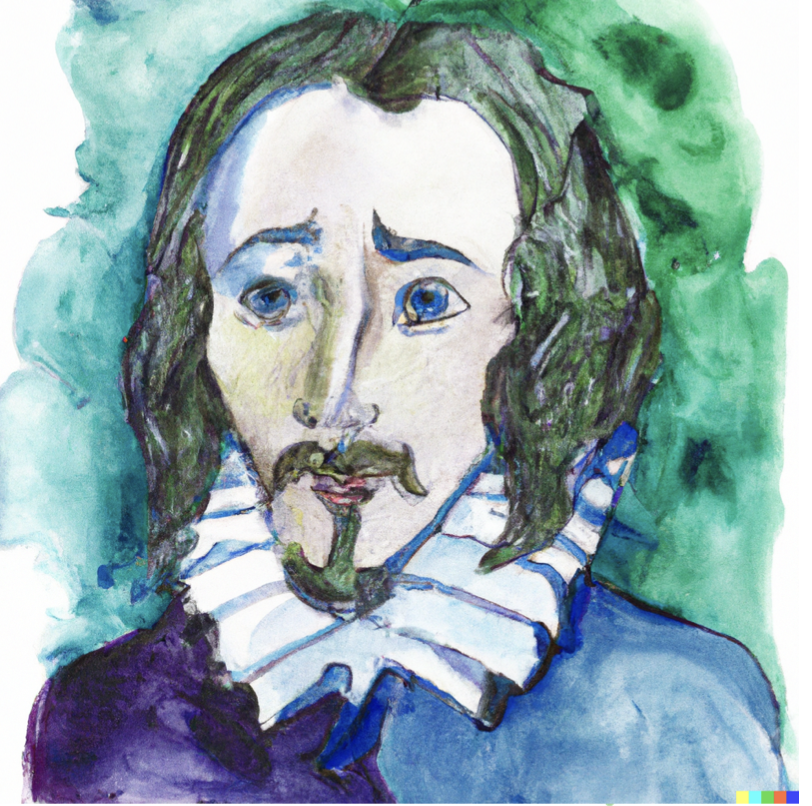
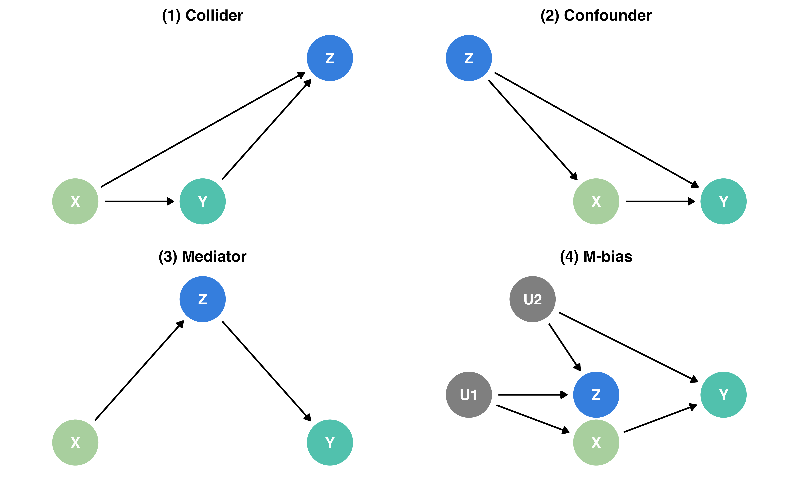
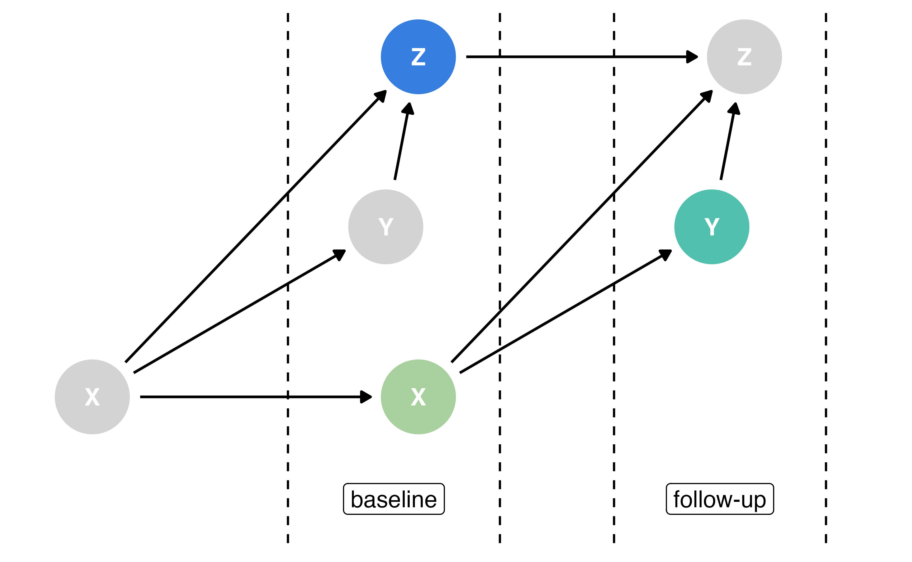

Causal inference is not just a statistics problem
2023-04-12 (updated: 2023-08-24)
Lucy D’Agostino McGowan
Wake Forest University
Causal Inference is not a statistics problem
Causal Inference is not just a statistics problem
The problem
We have measured variables, what should we adjust for?
| exposure | outcome | covariate |
|---|---|---|
| 0.49 | 1.71 | 2.24 |
| 0.07 | 0.68 | 0.92 |
| 0.40 | -1.60 | -0.10 |
| . | . | . |
| . | . | . |
| . | . | . |
| 0.55 | -1.73 | -2.34 |
A bit more info

To adjust or not adjust? That is the question.
Causal Quartet

Your turn 1
Load the quartets package
For each of the following 4 datasets, look at the correlation between exposure and covariate: causal_collider, causal_confounding, causal_mediator, causal_m_bias
For each of the above 4 datasets, create a scatterplot looking at the relationship between exposure and outcome
For each of the above 4 datasets, fit a linear model to examine the relationship between the exposure and the outcome
10:00
Relationship between exposure and outcome

Relationship between exposure and covariate
Correct effects
| Data generating mechanism | Correct causal model | Correct causal effect |
|---|---|---|
| (1) Collider | Y ~ X | 1.0 |
| (2) Confounder | Y ~ X ; Z | 0.5 |
| (3) Mediator | Direct effect: Y ~ X ; Z Total Effect: Y ~ X | Direct effect: 0.0 Total effect: 1.0 |
| (4) M-Bias | Y ~ X | 1.0 |
D’Agostino McGowan L, Gerke T, Barrett M (2023). Causal inference is not a statistical problem. Preprint arXiv:2304.02683v1.
Observed effects
| Data generating mechanism | ATE not adjusting for Z | ATE adjusting for Z | Correlation of X and Z |
|---|---|---|---|
| (1) Collider | 1.00 | 0.55 | 0.70 |
| (2) Confounder | 1.00 | 0.50 | 0.70 |
| (3) Mediator | 1.00 | 0.00 | 0.70 |
| (4) M-Bias | 1.00 | 0.88 | 0.70 |
D’Agostino McGowan L, Gerke T, Barrett M (2023). Causal inference is not a statistical problem. Preprint arXiv:2304.02683v1.
The solution
The partial solution
# A tibble: 100 × 6
exposure_baseline outcome_baseline covariate_baseline
<dbl> <dbl> <dbl>
1 -1.43 0.287 -0.0963
2 0.0593 -0.978 -1.11
3 0.370 0.348 0.647
4 0.00471 0.851 0.755
5 0.340 1.94 1.19
6 -3.61 -0.235 -0.588
7 1.44 -0.827 -1.13
8 1.02 -0.0410 0.689
9 -2.43 -2.10 -1.49
10 -1.26 -2.41 -2.78
# ℹ 90 more rows
# ℹ 3 more variables: exposure_followup <dbl>,
# outcome_followup <dbl>, covariate_followup <dbl>Time-varying data
Time-varying DAG
True causal effect: 1 Estimated causal effect: 0.55
Time-varying DAG
True causal effect: 1 Estimated causal effect: 1
outcome_followup ~ exposure_baseline + covariate_baseline
The partial solution
| Data generating mechanism | ATE not adjusting for pre-exposure Z | ATE adjusting for pre-exposure Z | Correct causal effect |
|---|---|---|---|
| (1) Collider | 1.00 | 1.00 | 1.00 |
| (2) Confounder | 1.00 | 0.50 | 0.50 |
| (3) Mediator | 1.00 | 1.00 | 1.00 |
| (4) M-Bias | 1.00 | 0.88 | 1.00 |
D’Agostino McGowan L, Gerke T, Barrett M (2023). Causal inference is not a statistical problem. Preprint arXiv:2304.02683v1.
On M-Bias
- The relationship between Z and the unmeasured confounders needs to be really large (Liu et al 2012)
- “To obsess about the possibility of [M-bias] generates bad practical advice in all but the most unusual circumstances” (Rubin 2009)
- There are (almost) no true zeros (Gelman 2011)
- Asymptotic theory shows that induction of M-bias is quite sensitive to various deviations from the exact M-Structure (Ding and Miratrix 2014)
Your turn 2
For each of the following 4 datasets, fit a linear linear model examining the relationship between outcome_followup and exposure_baseline adjusting for covariate_baseline: causal_collider_time, causal_confounding_time, causal_mediator_time, causal_m_bias_time
10:00